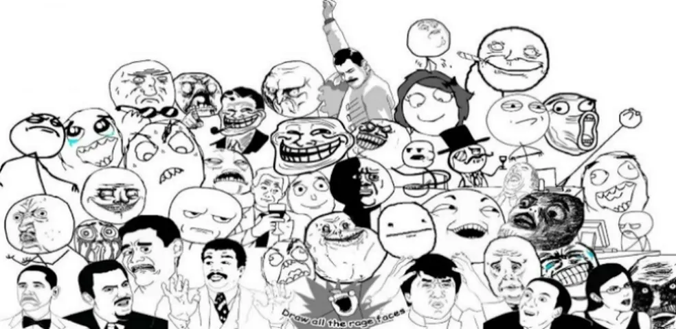
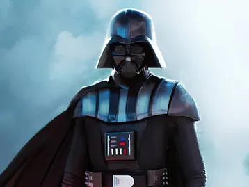
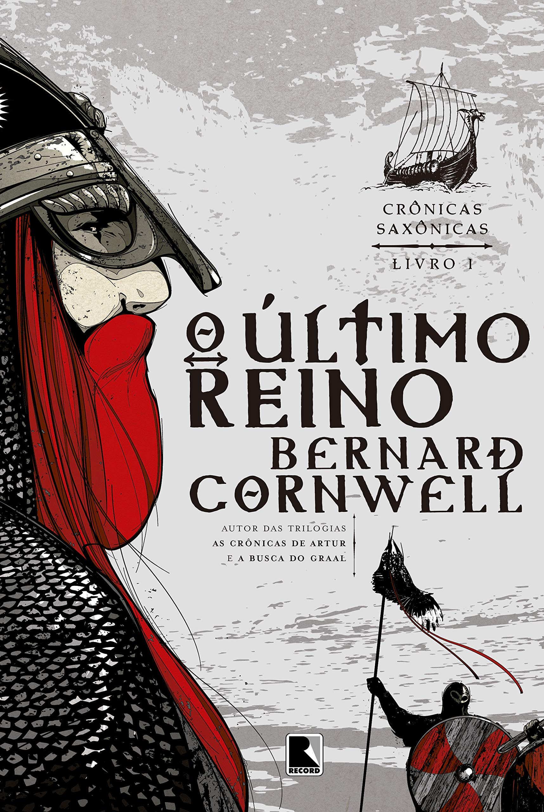
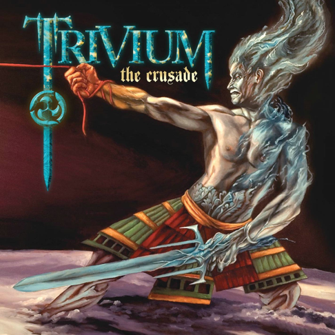
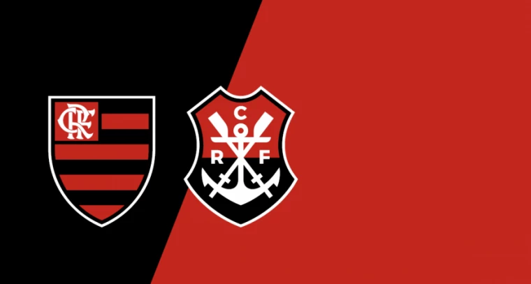
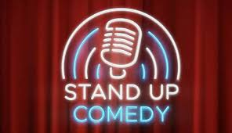

Imagens com gostos pessoais
Memes:
Um meme é uma ideia, comportamento ou cultura que se espalha pela internet, geralmente na forma de imagens, vídeos ou textos humorísticos, e que é amplamente compartilhado e adaptado pelos usuários de redes sociais
PCs antigos:
PCs antigos une nostalgia e história, celebrando a evolução da tecnologia e a criatividade por trás de máquinas que moldaram o mundo digital
---Requisitos de hardware ---
Processador: 486DX 66 MHz ou superior.
Memória RAM: 16 MB (24 MB recomendados).
Espaço no disco rígido: Aproximadamente 500 MB de espaço livre para a instalação.
Unidade de CD-ROM: Necessária para a instalação do sistema.
Tela: VGA 640x480 em 16 cores é o mínimo, com 32 bits recomendado.
Filmes:
Star Wars é uma famosa saga de ficção científica que segue um épico conflito entre Jedi e Sith, explorando temas como o bem, o mal, destino e família em uma galáxia distante.
Livros:
O autor da obra "Cônicas Sacxonicas" é Manoel Jairo Bezerra, um importante matemático e educador brasileiro. Ele foi um pioneiro no ensino da matemática no Brasil, ficando famoso por sua didática clara e por escrever uma série de livros que se tornaram clássicos no ensino médio e pré-vestibular, especialmente em geometria analítica
Musica:
A banda Trivium é uma formação americana de metal moderno, conhecida por misturar agressividade do metalcore com a complexidade do thrash metal. Seu disco "Ascendancy" (2005) é considerado um marco do gênero.
Sistema Operacional:
O Linux é um sistema operacional de código aberto, baseado no Unix, conhecido por sua estabilidade, segurança e customização. É amplamente usado em servidores, dispositivos embarcados e como alternativa ao Windows e macOS em desktops.
Futebol:
O Clube de Regatas do Flamengo é um dos maiores e mais populares times do Brasil, famoso por suas conquistas no futebol, especialmente na década de 1980. Com uma torcida apaixonada e massiva, é conhecido como "Flamengo" e suas cores são vermelho e preto.
Comedia:
O Stand-up comedy é um estilo de comédia onde um comediante se apresenta sozinho no palco, geralmente com um microfone, e faz monólogos humorísticos baseados em observações do cotidiano, críticas sociais e experiências pessoais.
Tatuagens orientais:
As tatuagens orientais (ou irezumi) são um estilo tradicional com origem no Japão, caracterizado por temas como dragões, carpas, flores de cerejeira e máscaras hannya, sempre com composições harmoniosas e cheias de simbolismo. Usam cores vibrantes, contornos fortes e costumam cobrir grandes áreas do corpo, como costas e braços, contando histórias de mitologia, sorte, proteção e força.

Videogames:
The Legend of Zelda: Ocarina of Time é um clássico da Nintendo 64 que revolucionou os jogos em 3D com sua narrativa imersiva e mecânicas inovadoras. A jornada de Link no tempo para salvar Hyrule permanece como uma referência atemporal na indústria.